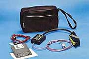
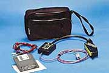

ПРОГРАММАТОР АВТОМОБИЛЬНЫХ КОНТРОЛЛЕРОВ
 
Вторая фотография взята из статьи «Махнемся программами?» (журнал «За рулем», № 6 за 2001 г., стр.101).

Вторая фотография взята из статьи «Махнемся программами?» (журнал «За рулем», № 6 за 2001 г., стр.101).
Если немного вернуться назад, то, например, автомобильные контроллеры фирмы «GM» (General motors) или их отечественные аналоги ЯНВАРЬ-4 имели возможность перепрограммирования путем замены микросхемы (чип) постоянного запоминающего устройства (ПЗУ).
Для этого на корпусе контроллера предусмотрена крышечка, сняв которую, можно было установить ПЗУ с новой программой управления двигателем. Таким образом американские изготовители автомобильных контроллеров страховали себя от порчи информации в ПЗУ и собственных ошибок в программе, а также предоставляли сервисным СТО широкие возможности для перепрограммирования контроллеров (чип-тюнинг) в эксплуатации.
В настоящее время появились новые как импортные, так и отечественные автомобильные контроллеры, например, ЯНВАРЬ-5, МИКАС-7 и др., в которых применяются так называемые Флэш-ПЗУ (ФПЗУ), впаянные непосредственно в плату контроллера. С точки зрения автосервиса такие контроллеры и ПЗУ стали составлять единое целое.
Для записи/чтения программ в/из ФПЗУ изготовителем контроллеров используется специальная процедура информационного обмена между программатором, микроконтроллером и ФПЗУ. Поэтому образом все существующие универсальные программаторы, применяемые ранее в автосервисе для программирования ПЗУ, оказались для этих случаев неприменимы.
Однако расширение выпуска отечественных автомобилей с впрыском бензина еще больше обострило проблемы, связанные с их эксплуатацией. Можно перечислить некоторые из них, которые могут быть решены в чип-тюнинге ФПЗУ.
- Оптимизации калибровок управления двигателем.
- Развитие программ управления.
- Неиссякаемые потребности автовладельцев.
Исходя из вышеперечисленных соображений был разработан ПРОграмматор автомобильных КОНтроллеров ПРОКОН-1.
Программа ПРОКОН-1 procon-1.zip (125 kbytes) работает с любым адаптером RS-232/K-line.
ПРОКОН-1 предназначен для программирования автомобильных контроллеров типа ЯНВАРЬ-5, МИКАС-7, МИКАС-6, их модификаций и исполнений, которые применяются для управления двигателями с впрыском бензина автомобилей марок «ВАЗ», «ГАЗ» и «УАЗ».
ПРОКОН-1 позволяет выполнить следующие процедуры:
- чтение программы из контроллера;
- запись программы в контроллер;
- сравнение программы контроллера с файлом;
- проверка функционирования программы контроллера;
- коррекция паспортных данных.
ПРОКОН-1 функционирует на базе персональной ЭВМ (ПЭВМ) типа IBM–PC AT–386 (и выше) под управлением операционной системы «MS–DOS» или в режиме «эмуляции MS–DOS» под «WINDOWS-95/98» совместно с адаптером связи RS-232/K-line типа АПМ-1.1. Электропитание АПМ-1.1 осуществляется от внешнего источника постоянного тока с номинальным напряжением 12В/0,5А.
В базовый комплект ПРОКОН-1 входят: адаптер RS-232/K-line АПМ-1.1, кабель программатора контроллеров МИКАС-7 и ЯНВАРЬ-5 и паспорт.
Дополнительно к базовому комплекту можно заказать кабели диагностические ГАЗ-1, ГАЗ-2, ВАЗ-1 (euro-0/2), ВАЗ-2 (euro-3/4), кабель программатора контроллеров ЯНВАРЬ-7.2 и Bosch M7.9.7, удлинитель COM-порта 5 метров, перемычку АПС, сумку рабочую.
Руководство по эксплуатации, паспорт и программу можно взять здесь.
На странице price.html приведены цены на продукцию ООО «А2».
Заказ комплекта ПРОКОН-1
ДВОЙНЫЕ ПРОШИВКИ И ОБХОД «защиты»
Эта статья появилась в связи с участившимися обращениями в адрес нашей фирмы по данным вопросам.
Хочу отметить, что мы несем ответственность только за качество записи (чтения) в блоки ЯНВАРЬ-5 и МИКАС-7 комплексом ПРОКОН-1. Ответственность за сами прошивки (кстати, мы их и не распространяем) и за работу автомобиля с измененными прошивками мы не несем. Также мы не можем брать на себя ответственность за доработку блоков под двойные прошивки.
- Двойные прошивки.
- Есть два пути заставить блок ЯНВАРЬ-5 работать с двумя прошивками:
- доработать блок ЯНВАРЬ-5. Примеры подобных доработок см. здесь. Запись двух прошивок в доработанный блок ЯНВАРЬ-5 осуществляется следующим образом: записывается сначала одна прошивка, затем аппаратно переключается банк памяти и записывается вторая прошивка.
- воспользоваться «двухрежимной» прошивкой, которые позволяют переключать банки памяти ЯНВАРЬ-5 программным путем (без доработок блока). Перечень программ позволяющих получать такие прошивки см. здесь. Что-либо сказать по поводу этих программ мы не можем, так как наша фирма не занимается чип-тюнингом.
- Схемотехника блока МИКАС-7 такова, что в него нельзя записать две прошивки без его аппаратной доработки. Сделать это можно только следующим варварским способом:
- вскрываете блок, подрезаете проводник (подложку) адресного контакта 2 микросхемы Flash (на плате контроллера это квадратная 32-контактная микросхема, нумерация контактов от точки на микросхеме против часовой стрелки);
- затем 2-ую ножку микросхемы Flash и логическую единицу (+5 вольт, которые можно взять с 32 ноги микросхемы Flash, через резистор 10 ком) надо вывести на разъем блока. А так как все контакты блока заняты (см. здесь), то Вам решать какие из контактов «лишние»;
- проводники идущие в блок от выбранных Вами «лишних» контактов необходимо отрезать. Затем вывести на них логическую единицу (+5 вольт через резистор не менее 1,5 ком) и 2-ую ножку Flash, «землю» можно взять с 19 контакта разъема блока;
- на соответствующие жгутовые контакты автомобиля и программатора подсоединяете тумблер, среднюю точку тумблера присоединяете к 2-ой ножке Flash;
- запись двух прошивок в доработанный блок МИКАС-7 осуществляется следующим образом: записывается сначала одна прошивка, затем аппаратно переключается банк памяти и записывается вторая прошивка.
Для записи таких прошивок наша фирма ввела в ПРОКОН-1 процедуру программного переключения банка памяти.
Теперь пользователь комплекса ПРОКОН-1 может записать две прошивки объемом 64 kbyte каждая или «двухрежимную» прошивку объемом 128 kbyte в блок ЯНВАРЬ-5 не дорабатывая его.
При записи двух прошивок по 64 kbyte или «двухрежимной» прошивки 128 kbyte надо учитывать, что в недоработанном блоке ЯНВАРЬ-5 рабочая программа располагается в зоне адресов $10000—$1FFFF Flash.
Таким образом, исходная область памяти блока ЯНВАРЬ-5: $10000—$1FFFF, дополнительная: $00000—$0FFFF.
- Как обойти «защиту».
Рекомендации данного раздела относятся к случаю установленной защиты Flash контроллера через блокирование внутрисхемной процедуры микроконтроллера Bootstrap Loader—в данном случае программатор ПРОКОН-1 не может связаться с контроллером для выполнения чтения и записи программ.
Рекомендации данного раздела не распространяются на случаи защиты самих прошивок Flash, которые, как правило, выполняются путем их привязки к паспортным данным конкретного контроллера. В этом случае прошивка может быть считана с одного контроллера и перезаписана в другой с помощью программатора ПРОКОН-1, но двигатель может не запуститься.
Для того чтобы прочитать программу из защищенного от Bootstrap Loader контроллера ЯНВАРЬ-5 (МИКАС-7) или обновить ее, необходимо:
- вскрыть контроллер;
- подсоединить его к программатору, установить тумблер адаптера АПМ-1 в положение программирования (Я5 или М7) и войти в процедуру «Программирование контроллера (*.hex/bin)»;
- после выбора порта связи, когда появится сообщение: «Подайте питание ...», замкнуть на общий вывод (массу), например, пинцетом, один из адресных контактов (2...12, 23, 25...29) микросхемы Flash (на плате контроллера это квадратная 32-контактная микросхема, нумерация контактов от точки на микросхеме против часовой стрелки), затем подать питание на адаптер АПМ-1 и нажать «Entr»;
- после входа контроллера в режим программирования (отображается меню операций) убрать адресную перемычку на микросхеме Flash;
- далее для выполнения операций чтения и программирования необходимо пользоваться рекомендациями разделов 3 и 4 procon.doc.
Внимание. Для исключения повреждения аппаратной части контроллера замыкание и размыкание контактов микросхемы Flash необходимо выполнять с особой осторожностью.
Для того чтобы убрать защиту с программы защищенного от Bootstrap Loader контроллера необходимо «Обнулить» в файле или во Flash контроллера ячейки $6000 и $C000, но при этом программа контроллера в процессе работы, возможно, будет формировать соответствующий код «Ошибка ПЗУ контроллера».
Но, на мой взгляд, столкнувшись с подобной ситуацией лучше всего объяснить клиенту, что предыдущий «тюнингист» сыграл с ним злую шутку и привязал его блок к своему «ненавязчивому сервису».